Inventory Models
The contents of the InventoryModels folder concern classical inventory control. The models implemented at the time of writing include EOQ, Newsvendor, Base Stock, and Qr. This subject is lighter on analytical formulas and heavier on simulation, as determined by the types of questions addressed by classical inventory control theory. Analytical formulas are implemented to solve the classical optimization problems, but more depth (for example, considering performance measures other than expected cost) requires simulation.
EOQ, Base Stock, and Qr all concern recurring inventory replenishments, and are well-suited to discrete-event simulation. Newsvendor, however, concerns a single, one-time inventory replenishment and is better suited to a Monte Carlo simulation. Hopp & Spearman do not classify EOQ as a statistical inventory model - the classic formulation assumes that demand is deterministic - but this assumption is easily relaxed in a simulation model. Therefore, all models implemented include random demand (which can be made deterministic by choosing a normal distribution with variability=eps, the closest you can get to zero in MATLAB). In addition, the Base Stock and Qr simulation models relax the classic formulations' assumption that replenishment lead time is deterministic, which can be made deterministic in the same way as demand.
A note about the simulation models: Costs (whether production costs, lot setup costs, inventory holding costs, backorder costs, or total costs) are returned in two ways - normalized per unit of satisifed demand, and one-year aggregate. In both cases, however, simulations are not necessarily performed for just one year, and replications are deliberately forced to have different lengths through randomization. This is done to smooth out sawtooth effects in cost curves. If simulating for exactly one year, for example with EOQ and Qr, the timing of the final lot ordered (relative to the end-of-year) is very influential and induces sawtooth-like cost curves as a function of Q. We have mixed feelings on curve-smoothing; a benefit is that it enables visualizing interactions between variables which would otherwise be clouded by variability, but a disadvantage is that focusing on averages may be unhelpful to someone whose planning horizon is one year instead of one decade.
Most importantly, a collection of DEMO scripts is included showing how to use the analytical formulas, the simulation models, and both to compare their results. Each DEMO script is a usage example, an illustration of what is possible, an idea for a lab experiment. The collection is certainly not exhaustive, and it is hoped that they will inspire users to create more, plus transcribe the good ones into carefully-defined lab experiments for education. The remainder of this overview summarizes what the included DEMO scripts do.
Contents
- Newsvendor Assumptions
- Newsvendor: Expected Profit, Sensitivity at Q*, and Probability of Loss as Order Quantity Q Changes
- Newsvendor: Expected Profit as Demand Distribution Changes
- Newsvendor: Expected Profit as Demand Distribution Variability Changes
- Newsvendor: Profit Distribution
- Newsvendor: Profit Statistics as Demand Distribution Variability Changes
- EOQ Assumptions
- EOQ: Costs as Lot Size Q Changes
- EOQ: Costs at Q* as Inventory Holding Cost Changes
- EOQ: Costs as Demand Interarrival Time Variability Changes
- Base Stock Assumptions
- Base Stock: Costs, Backorder Level, and Fill Rate as Base Stock Level R Changes
- Base Stock: Backorder Distribution
- Base Stock: Fill Rate at R* as Backorder Cost Changes
- Base Stock: Costs, Backorder Level, and Fill Rate as Demand Interarrival Time Variability Changes
- Base Stock: Costs, Backorder Level, and Fill Rate as Replenishment Lead Time Mean Changes
- Base Stock: Costs, Backorder Level, and Fill Rate as Replenishment Lead Time Variability Changes
- Qr Assumptions
- Qr: Total Costs and Fill Rate as Lot Size Q and Reorder Point R Change
- Qr: Backorder Distribution
- Qr: Inventory Statistics at (Q*, R*) as Lot Setup Cost Changes
Newsvendor Assumptions
Newsvendor system assumptions:
- Products are separable with no shared interactions. This enables single-product analysis.
- Inventory cannot be carried across planning periods. Future time periods are independent of the current decision, which is why the classical newsvendor problem is static and involves only a single, one-time inventory replenishment.
- Demand is random. At the time of writing, both the analytical and the simulation model require that demand can be modeled with a known probability distribution (as opposed to, for example, a non-parametric description).
- Deliveries are made in advance of demand, such that all stock is available to meet demand.
Newsvendor cost assumptions:
- Each unit ordered incurs a fixed production cost (cost/unit)
- Hopp & Spearman's formulation (section 2.4.1, ed.2) is stated in terms of costs of ordering-too- little and ordering-too-much, and assumes that they are linear (e.g. proportional to the amount by which demand exceeds supply or supply exceeds demand). The formulation implemented is equivalent, but requires a different statement of these costs:
- Each unit has a fixed sale cost (cost/unit)
- Each unit has a fixed salvage cost if left over after all demand satisfied (cost/unit)
Newsvendor: Expected Profit, Sensitivity at Q*, and Probability of Loss as Order Quantity Q Changes
The following demo sweeps over order size Q. Visualizations are generated for E[Profit] versus Q and also E[Profit]'s sensitivity around (empirical) Q*. Because E[Profit] may not be the most helpful performance metric for newsvendor's one-time decision, an additional visualization is generated which pairs E[Profit] with Pr[Profit<0] for each Q.
Parameters which can be changed by a user include demand's distribution, mean, and variability, the product's unit cost, price, and salvage value, and a range of order quantities Q.
DEMO_Newsvendor_SweepOrderSizeQ_VisualizeExpProfit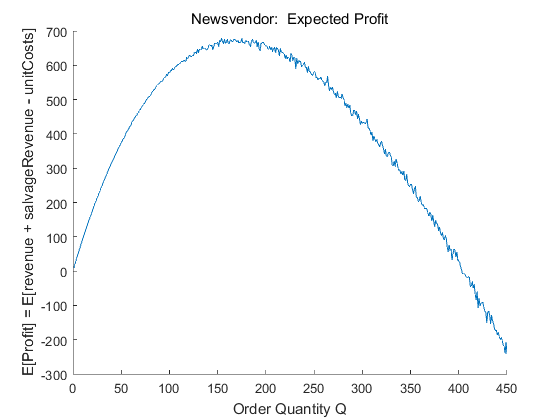 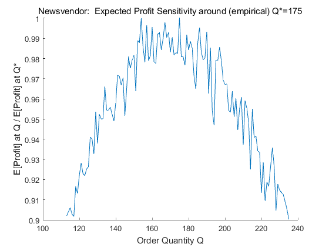 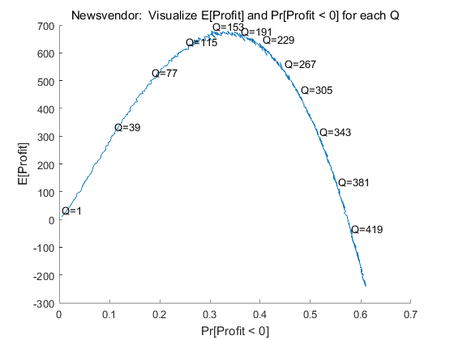
Newsvendor: Expected Profit as Demand Distribution Changes
The following demo sweeps over order size Q, and generates a visualization for E[Profit] versus Q. It does this for various values of the demand distribution type, at the time of writing exponential, uniform, triangular_symmetric, gamma, lognormal, and normal. (Be aware that uniform, triangular, and normal may not be quite so because negative demand samples are truncated at zero.) A separate curve is generated for each distribution type, such that the E[Profit] curve's shape and also Q* can be compared as the demand distribution type (but not the mean or SCV) changes.
Parameters which can be changed by a user include a range of demand distribution types, the common mean and SCV for each distribution, the product's unit cost, price, and salvage value, and a range of order quantities Q.
DEMO_Newsvendor_SweepQandDemandDistrib_VisExpProfit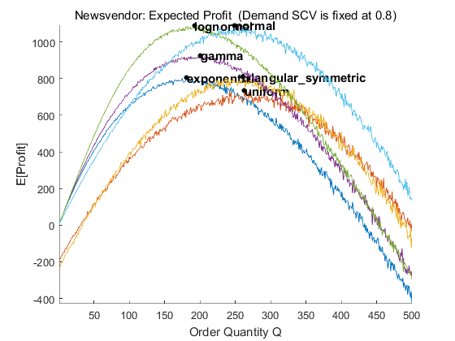
Newsvendor: Expected Profit as Demand Distribution Variability Changes
The following demo sweeps over order size Q, and generates a visualization for E[Profit] versus Q. It does this for various values of demand variability, as measured by SCV (squared coefficient of variability, the variance divided by the mean^2). A separate curve is generated for each demand SCV, such that the E[Profit] curve's shape and also Q* can be compared as the demand distribution SCV (but not the type or mean) changes.
Parameters which can be changed by a user include demand's distribution and mean, a range of demand SCVs, the product's unit cost, price, and salvage value, and a range of order quantities Q.
DEMO_Newsvendor_SweepQandDemandSCV_VisExpProfit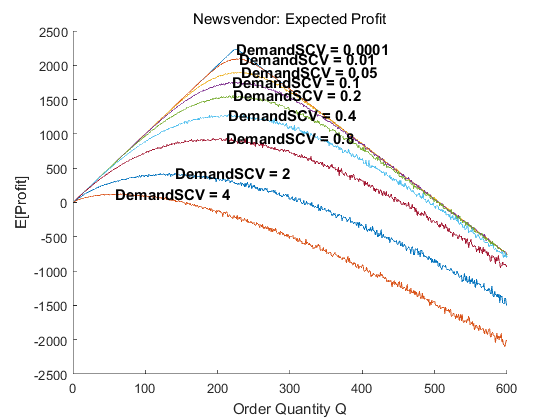
Newsvendor: Profit Distribution
The following demo fixes Q and computes many samples of profit (sales revenue plus salvage revenue minus production costs) using a Monte-Carlo simulation. Instead of returning a metric such as expected profit, however, this demo returns visualizations of the empirical profit distribution (its PDF and CDF). One interesting statistic which can be visualized in the CDF plot is the (empirical) probability that profit is negative, meaning production costs exceed the sum of sales and salvage revenue, such that the choice of Q results in losing money.
Parameters which can be changed by a user include demand's distribution, mean, and variability, the product's unit cost, price, and salvage value, and Q.
DEMO_Newsvendor_FixQ_VisualizeProfitPDFandCDF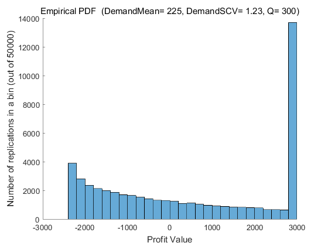 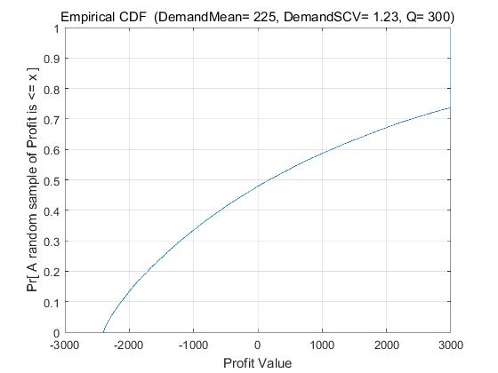
Newsvendor: Profit Statistics as Demand Distribution Variability Changes
The following demo sweeps over demand variability, as measured by SCV (squared coefficient of variability, the variance divided by the mean^2). For each value the analytical Q* is computed, and then many samples of profit (sales plus salvage revenue minus purchase/ production costs) are computed using a Monte-Carlo simulation. Two visualizations are generated, showing (1) The distribution of profit at (analytical) Q* as demand SCV increases, and (2) A pairing of E[Profit] with Pr[Profit<0] at (analytical) Q* as demand SCV increases.
Parameters which can be changed by a user include demand's distribution and mean, a range of demand SCVs, and the product's unit cost, price, and salvage value.
DEMO_Newsvendor_SweepDemandSCV_VisProfitDistribAndLossProb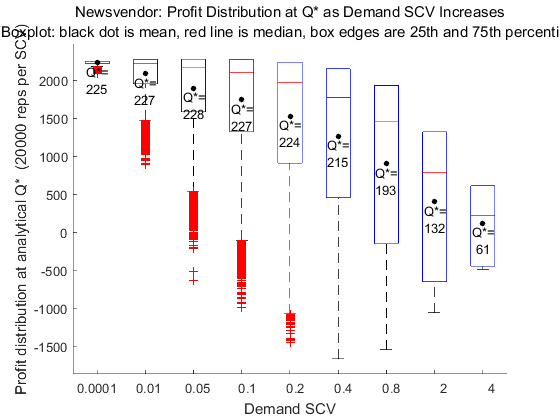 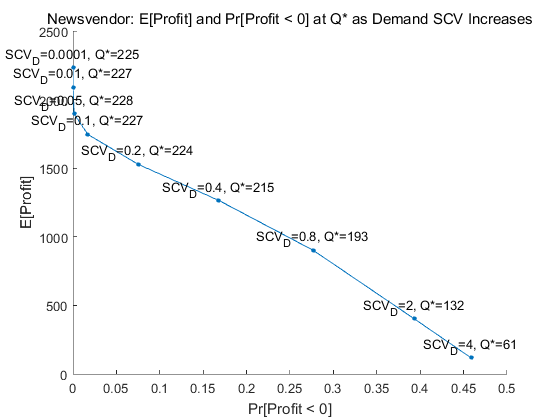
EOQ Assumptions
EOQ system assumptions:
- Products are separable with no shared interactions. This enables single-product analysis.
- Demand is deterministic with a constant rate over time. This assumption is relaxed in the simulation model; demand can be random, or made deterministic by choosing the normal distribution with stdev=eps, which is as close to zero as possible.
- When inventory drops to zero, a lot of size Q is immediately reordered.
- Production and delivery of a lot are instantaneous.
EOQ cost assumptions:
- Each unit ordered incurs a fixed production cost (cost/unit)
- Each lot of Q units ordered incurs a fixed setup cost (cost/lot)
- Each unit in inventory incurs a time-dependent holding cost (cost/unit-time)
EOQ: Costs as Lot Size Q Changes
The purpose of the following demo is to reproduce figure 2.2 in Hopp & Spearman (ed. 2). The demo invokes the simulation model 'ProdSystem_EOQAssumptionsAndCosts' (through its wrapper function) over a range of lot sizes Q. The output is a visualization of average costs incurred for each value of Q - total costs, inventory holding costs, lot setup costs, and production costs.
Parameters which can be changed by a user include demand interarrival times' distribution, mean, and variability, the product's production cost, inventory holding cost, and lot setup cost, and a range of lot sizes Q.
DEMO_EOQ_SweepOrderQtyQ_VisualizeCosts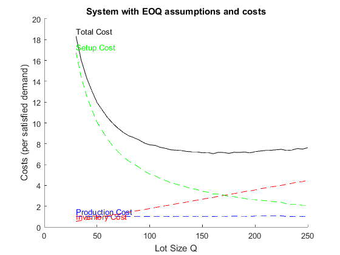
EOQ: Costs at Q* as Inventory Holding Cost Changes
The purpose of the following demo is to observe the effect of increasing inventory holding cost H relative to a fixed lot setup cost A. The demo invokes the simulation model 'ProdSystem_EOQAssumptionsAndCosts' (through its wrapper function) over a range of inventory holding costs. For each value the analytical Q* is computed, and the output is a visualization of average costs incurred (total, inventory holding, lot setup, and production) as inventory holding cost increases. An expected result is that as H increases then Q* will decrease.
Parameters which can be changed by a user include demand interarrival times' distribution, mean, and variability, the product's production cost, lot setup cost, and a range of inventory holding costs (as multiples of the lot setup cost).
DEMO_EOQ_SweepHoldingCostH_VisualizeCostsAtQStar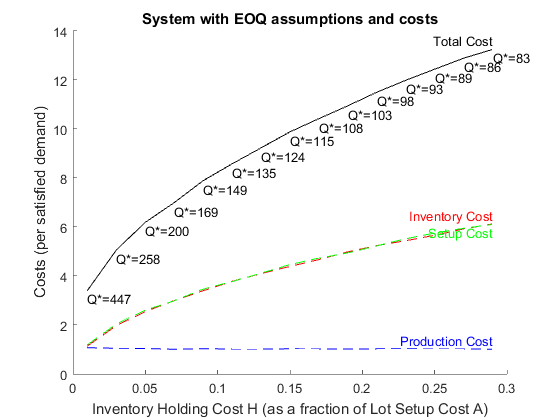
EOQ: Costs as Demand Interarrival Time Variability Changes
The following demo sweeps over demand interarrival time variability, as measured by SCV (squared coefficient of variability, the variance divided by the mean^2). The demo invokes the simulation model 'ProdSystem_EOQAssumptionsAndCosts' (through its wrapper function) over a range of demand interarrival time SCVs. The output is a visualization of average costs incurred for each demand interarrival time SCV - total costs, inventory holding costs, lot setup costs, and production costs. An expected result is that the cost curves will remain flat, because the EOQ assumption that production and delivery of a lot are instantaneous implies that only demand interarrival times' mean, not variability, should matter (and if true, justifies the assumption that demand is deterministic).
Parameters which can be changed by a user include demand interarrival times' distribution, mean, and a range of SCVs, the product's production cost, lot setup cost, and inventory holding cost, and a lot size Q.
DEMO_EOQ_SweepDemandSCV_VisualizeCosts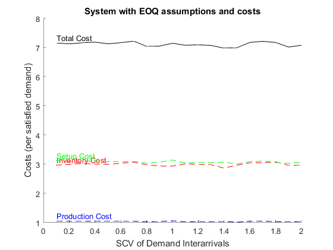
Base Stock Assumptions
Base Stock system assumptions:
- Products are separable with no shared interactions. This enables single-product analysis.
- Demands occur one at a time, and there are no batch orders. This assumption is built into the simulation model because (to the best of my knowledge) a Time-Based Entity Generator does not support batch generation of entities. If desired, demand inter-arrival times can be made deterministic by choosing the normal distribution with stdev=eps, as close to zero as possible in MATLAB.
- Demand which is not filled immediately is backordered, and there are no lost sales.
- A replenishment order is placed every time a demand occurs.
- Production and delivery of replenishment orders are NOT instantaneous, but rather require a fixed and known replenishment lead time. The "fixed and known" assumption is relaxed in the simulation model - replenishment lead times can be random, or made deterministic by choosing the normal distribution with stdev=eps, which is as close to zero as possible.
- Inventory Position is defined as on-hand inventory, plus open orders (not yet filled due to replenishment lead time), minus backorders. The inventory position should always equal the base stock level R.
Base Stock cost assumptions:
- Each unit ordered incurs a fixed production cost (cost/unit)
- Each unit in inventory incurs a time-dependent holding cost (cost/unit-time)
- Each demand backordered incurs a time-dependent backorder cost (cost/unit-time)
- There is NOT any fixed cost associated with a replenishment order, nor any constraint on the number of replenishment orders that can be placed in any time window.
Base Stock: Costs, Backorder Level, and Fill Rate as Base Stock Level R Changes
The purpose of the following demo is to reproduce figure 2.2 in Hopp & Spearman (ed. 2), except for the Base Stock inventory model instead of the EOQ model. The demo invokes the simulation model 'ProdSystem_BaseStockAssumptionsAndCosts' (through its wrapper function) over a range of base stock levels R. The output is a visualization of average costs incurred for each value of R - total cost, inventory holding cost, backorder cost, and production cost. Additional visualizations include fill rate (the fraction of demand filled without backorder and delay) as a function of R, statistics about the distribution of backorder level as a function of R, and an alternative visualization plotting costs against fill rate for each value of R, given that fill rate targets are often analysis inputs rather than outputs.
Parameters which can be changed by a user include demand interarrival times' distribution, mean, and variability, replenishment lead times' distribution, mean, and variability, the product's production cost, inventory holding cost, and backorder cost, and a range of base stock levels R.
UPDATE: The PARALLEL version of this demo supercedes the SERIAL version. It should produce exactly the same results, just much faster. It introduces parallelization by replacing several nested FOR loops with a single PARFOR loop, which by default will start and use as many background MATLAB sessions as your processor has cores.
%DEMO_BaseStock_SweepR_VisualizeCostsAndFillRate_SERIAL
DEMO_BaseStock_SweepR_VisualizeCostsAndFillRate_PARALLEL
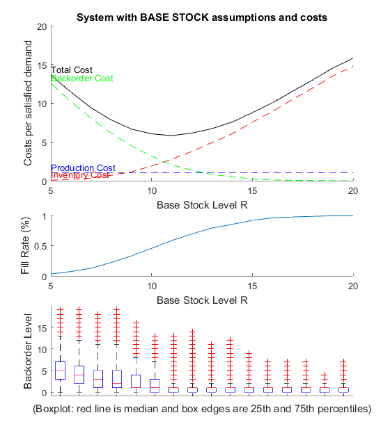 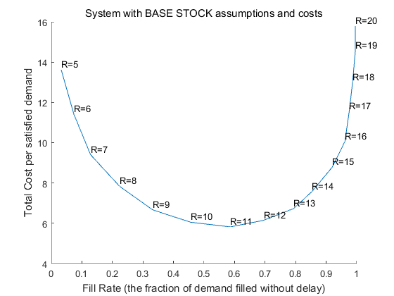 Base Stock: Backorder Distribution
The following demo fixes R and all other parameters, collects many samples of the backorder level across multiple replications, and returns visualizations of the backorder level's empirical distribution (its PDF and CDF).
Parameters which can be changed by a user include demand interarrival times' distribution, mean, and variability, replenishment lead times' distribution, mean, and variability, the product's production cost, inventory holding cost, and backorder cost, and base stock level R.
DEMO_BaseStock_FixR_VisualizeBackorderPDFandCDF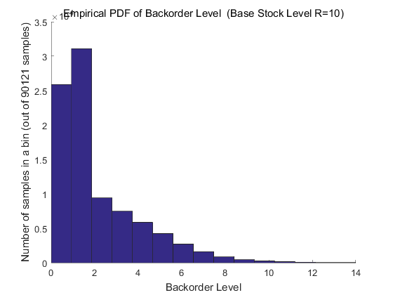 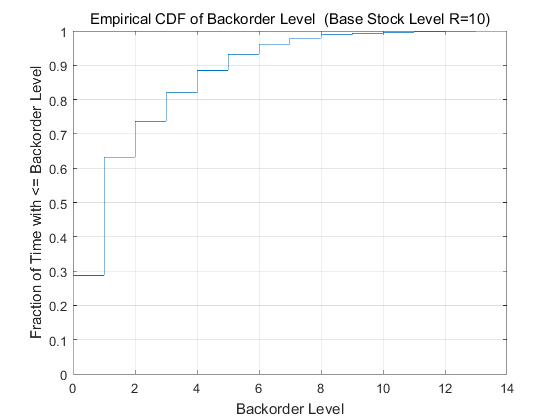
Base Stock: Fill Rate at R* as Backorder Cost Changes
The following demo was created to answer the question How high must the backorder cost be to realize a certain value of fill rate at R*? While it answers the question, it's unclear how much the answer depends on specific parameter values, so be careful drawing any general inferences. The demo invokes the simulation model 'ProdSystem_BaseStockAssumptionsAndCosts' (through its wrapper function) over a range of backorder costs B. For each value the analytical R* is computed, and the output is a visualization of fill rate at R* for each value of backorder cost.
Parameters which can be changed by a user include demand interarrival times' distribution, mean, and variability, replenishment lead times' distribution, mean, and variability, the product's production cost, inventory holding cost, and a range of backorder costs (as multiples of the inventory holding cost).
DEMO_BaseStock_SweepBackorderCostB_VisualizeFillRate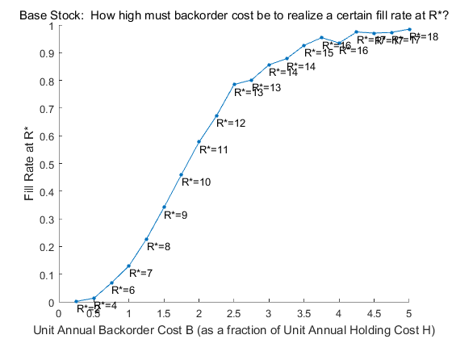
Base Stock: Costs, Backorder Level, and Fill Rate as Demand Interarrival Time Variability Changes
The following demo sweeps over demand interarrival time variability, as measured by SCV (squared coefficient of variability, the variance divided by the mean^2). The demo invokes the simulation model 'ProdSystem_BaseStockAssumptionsAndCosts' (through its wrapper function) over a range of demand interarrival time SCVs. One output is a visualization of average costs incurred (total, inventory holding, backorder, and production) as demand interarrival time SCV increases. A second output is a visualization of fill rate as demand interarrival time SCV increases.
Parameters which can be changed by a user include demand interarrival times' distribution, mean, and a range of SCVs, replenishment lead times' distribution, mean, and variability, the product's production cost, inventory holding cost, and backorder cost, and base stock level R.
UPDATE: v1 of the demo uses a fixed value for R, and v2 of the demo uses the analytical R* for the given parameters (which is a function of the demand distribution during replenishment lead time, and so changes with the demand interarrival time SCV). Depending on the parameters chosen, you may actually see R* decrease as demand interarrival time SCV increases, a counterintuitive possibility that Hopp & Spearman consider in a footnote on page 87 (ed. 2).
DEMO_BaseStock_SweepDemandSCV_VisualizeCostsAndFillRate_v1 DEMO_BaseStock_SweepDemandSCV_VisualizeCostsAndFillRate_v2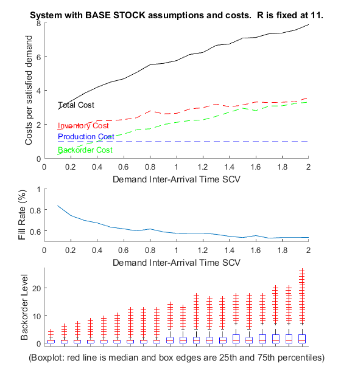 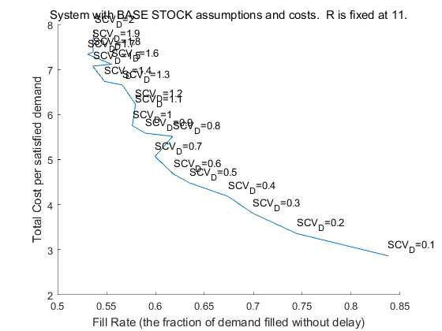 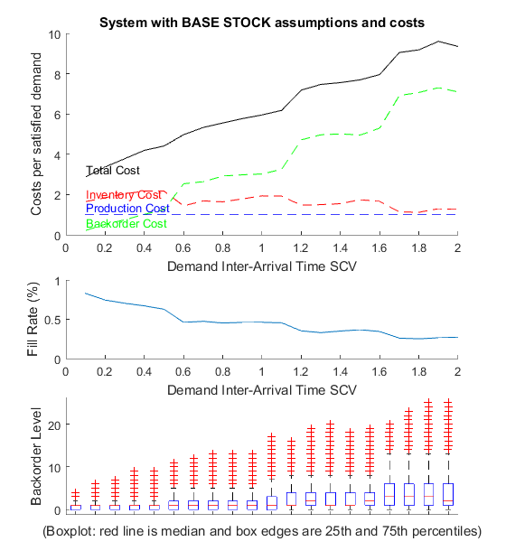 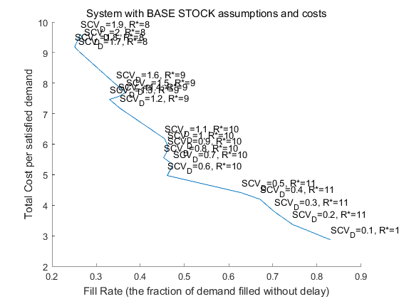 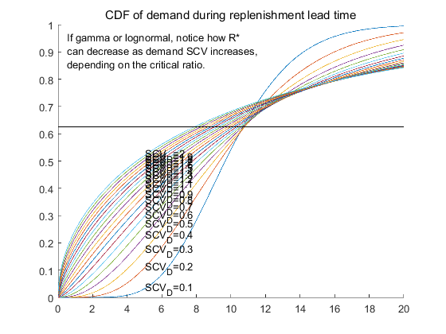
Base Stock: Costs, Backorder Level, and Fill Rate as Replenishment Lead Time Mean Changes
The following demo sweeps over replenishment lead time mean. The demo invokes the simulation model 'ProdSystem_BaseStockAssumptionsAndCosts' (through its wrapper function) over a range of replenishment lead time means. One output is a visualization of average costs incurred (total, inventory holding, backorder, and production) as replenishment lead time mean increases. A second output is a visualization to look for patterns in fill rate as replenishment lead time mean increases. An expected result is that as L increases then R* and also inventory holding costs will increase.
Parameters which can be changed by a user include demand interarrival times' distribution, mean, and variability, replenishment lead times' distribution, a range of means, and variability, the product's production cost, inventory holding cost, and backorder cost, and base stock level R.
DEMO_BaseStock_SweepLeadTimeL_VisualizeCostsAndFillRate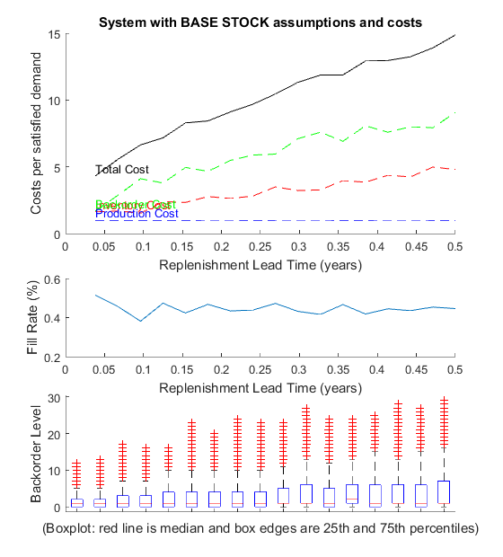 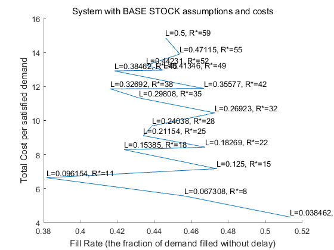
Base Stock: Costs, Backorder Level, and Fill Rate as Replenishment Lead Time Variability Changes
The following demo sweeps over replenishment lead time variability, as measured by SCV (squared coefficient of variability, the variance divided by the mean^2). The demo invokes the simulation model 'ProdSystem_BaseStockAssumptionsAndCosts' (through its wrapper function) over a range of replenishment lead time SCVs. One output is a visualization of average costs incurred (total, inventory, holding, backorder, and production) as demand interarrival time SCV increases. A second output is a visualization to look for patterns in fill rate as replenishment lead time SCV increases.
Parameters which can be changed by a user include demand interarrival times' distribution, mean, and a range of SCVs, replenishment lead times' distribution, mean, and a range of SCVs, the product's production cost, inventory holding cost, and backorder cost, and base stock level R.
DEMO_BaseStock_SweepLeadTimeSCV_VisualizeCostsAndFillRate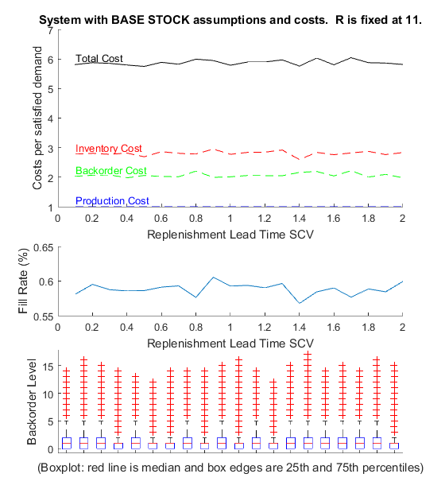 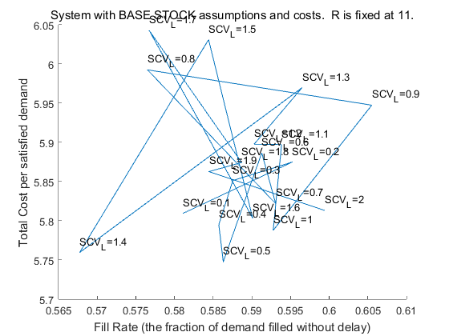
Qr Assumptions
Qr system assumptions:
- Products are separable with no shared interactions. This enables single-product analysis.
- Demands occur one at a time, and there are no batch demands. This assumption is built into the simulation model because (to the best of my knowledge) a Time-Based Entity Generator does not support batch generation of entities. If desired, demand inter-arrival times can be made deterministic by choosing the normal distribution with stdev=eps, which is as close to zero as possible.
- Demand which is not filled immediately is backordered, and there are no lost sales.
- Inventory Position is defined as on-hand inventory, plus open orders (not yet filled due to replenishment lead time), minus backorders. The inventory position in the QR model should oscillate between R and Q+R.
- A replenishment order for a lot of size Q is placed immediately whenever the inventory position decreases to R. Because replenishment orders are placed immediately, the inventory position should never spend time at level R, but upon decreasing to R then jump immediately to Q+R.
- Production and delivery of replenishment orders are NOT instantaneous, but rather require a fixed and known replenishment lead time. The "fixed and known" assumption is relaxed in the simulation model - replenishment lead times can be random, or made deterministic by choosing the normal distribution with stdev=eps, which is as close to zero as possible.
Qr cost assumptions:
- Each unit ordered incurs a fixed production cost (cost/unit)
- Each lot of Q units ordered incurs a fixed setup cost (cost/lot). An alternative described in Hopp & Spearman is to constrain the maximum number of replenishment orders per time window, but this alternative is not implemented in the simulation model 'ProdSystem_QrAssumptionsAndCosts'.
- Each unit in inventory incurs a time-dependent holding cost (cost/unit-time)
- Each demand backordered incurs a time-dependent backorder cost (cost/unit-time)
Qr: Total Costs and Fill Rate as Lot Size Q and Reorder Point R Change
The purpose of the following demo is to reproduce figure 2.2 in Hopp & Spearman (pg. 51 in ed. 2), except for the Qr inventory model instead of the EOQ model. However, that task is inherently difficult because while the expected cost curves for EOQ or Base Stock have only one independent variable (lot size Q for EOQ, base stock level R for Base Stock), the Qr model has two, both Q and R. Therefore, the output will be 3-D surfaces rather than 2-D curves. The demo invokes the simulation model 'ProdSystem_QrAssumptionsAndCosts' (through its wrapper function) over a range of lot sizes Q and reorder points R. The output is visualizations of average costs incurred for each value of (Q, R) - total costs, lot setup costs, inventory holding costs, backorder costs, and production costs. An additional visualization shows fill rate (the fraction of demand filled without backorder and delay) for each value of (Q, R).
Parameters which can be changed by a user include demand interarrival times' distribution, mean, and variability, replenishment lead times' distribution, mean, and variability, the product's production cost, lot setup cost, inventory holding cost, and backorder cost, and a range of lot sizes Q and reorder points R.
UPDATE: The PARALLEL version of this demo supercedes the SERIAL version. It should produce exactly the same results, just much faster. It introduces parallelization by replacing several nested FOR loops with a single PARFOR loop, which by default will start and use as many background MATLAB sessions as your processor has cores.
%DEMO_Qr_SweepQandR_VisualizeCostAndFillRate_SERIAL
DEMO_Qr_SweepQandR_VisualizeCostAndFillRate_PARALLEL
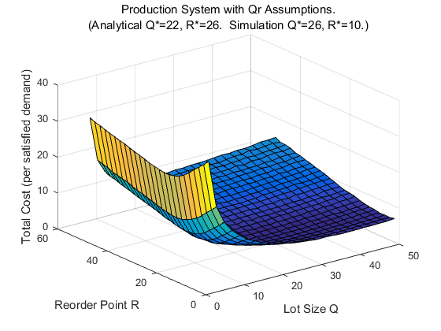 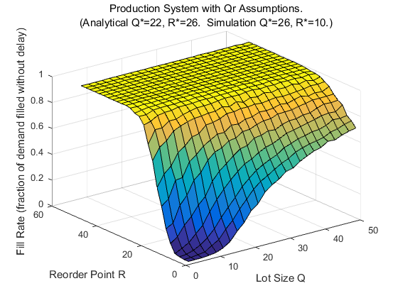 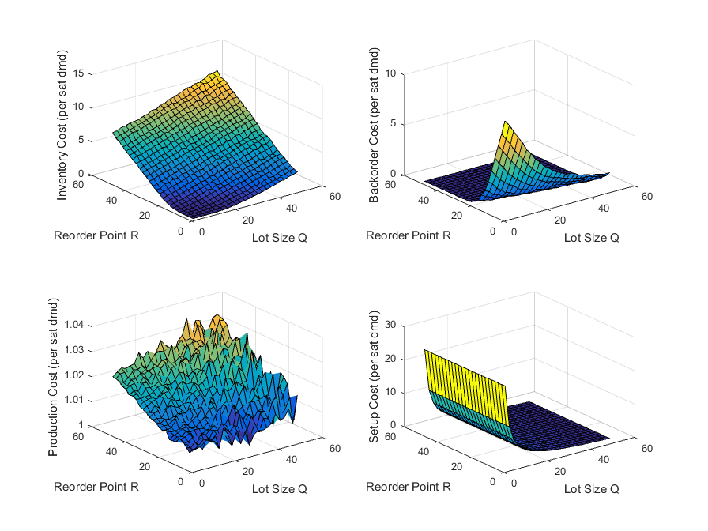 Qr: Backorder Distribution
The following demo fixes Q, R, and all other parameters, collects many samples of the backorder level across multiple replications, and returns visualizations of the backorder level's empirical distribution (its PDF and CDF).
Parameters which can be changed by a user include demand interarrival times' distribution, mean, and variability, replenishment lead times' distribution, mean, and variability, the product's production cost, lot setup cost, inventory holding cost, and backorder cost, and the lot size Q and reorder point R.
DEMO_Qr_FixQandR_VisualizeBackorderPDFandCDF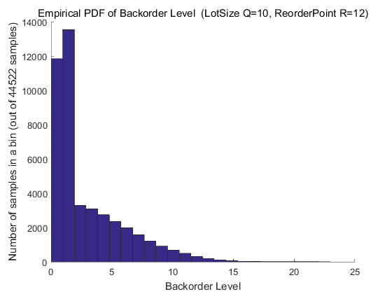 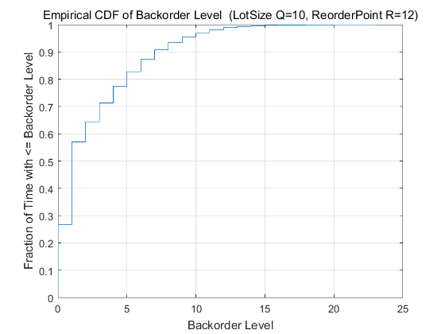
Qr: Inventory Statistics at (Q*, R*) as Lot Setup Cost Changes
The purpose of the following demo is to observe the effect of increasing lot setup cost A relative to a fixed inventory holding cost H. The demo invokes the simulation model 'ProdSystem_QrAssumptionsAndCosts' (through its wrapper function) over a range of lot setup costs A. For each value the analytical (Q*, R*) is computed, and the output is a visualization of average inventory statistics (number of replenishments per year, lot size Q*, and on-hand inventory level) as lot setup cost increases. An expected result is that as A increases relative to H then Q* will increase, the number of replenishments will decrease, and on-hand inventory will increase.
Parameters which can be changed by a user include demand interarrival times' distribution, mean, and variability, replenishment lead times' distribution, mean, and variability, the product's production cost, inventory holding cost, backorder cost, and a range of lot setup costs (as multiples of the inventory holding cost).
DEMO_Qr_SweepA_VisualizeInventoryStatsAtQStarRStar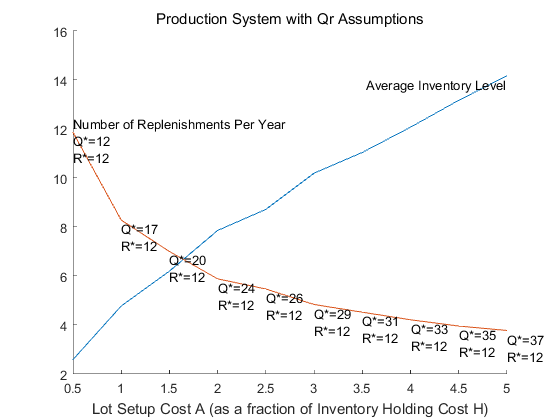